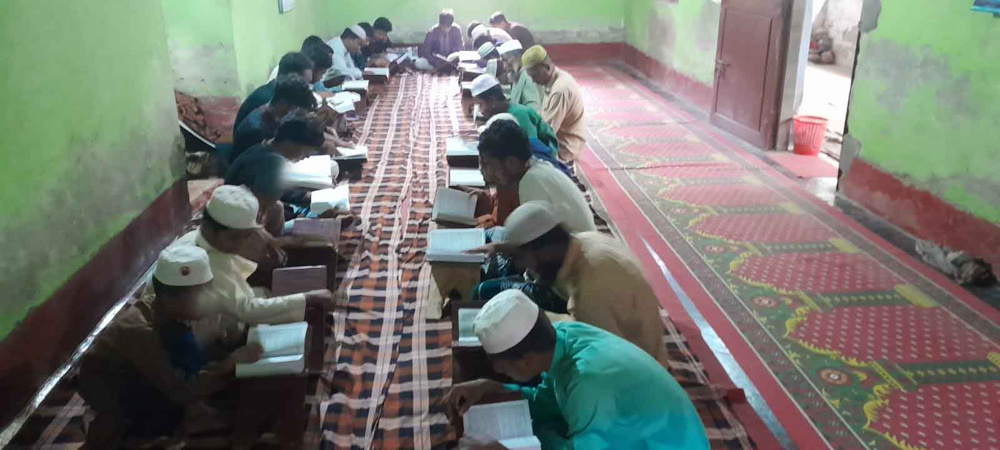
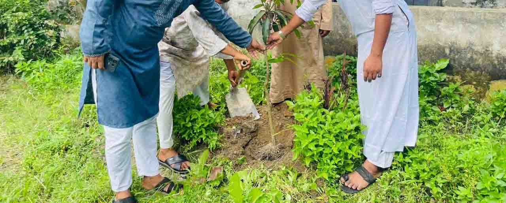
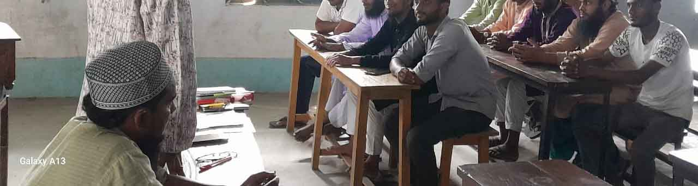
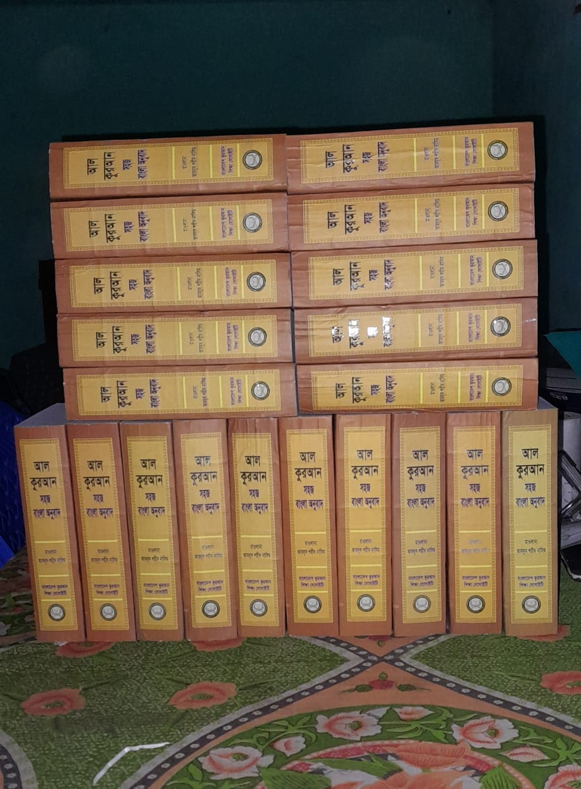
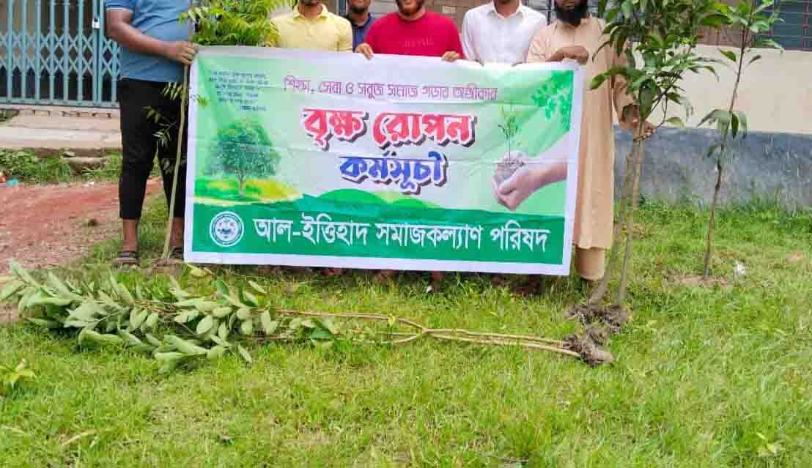
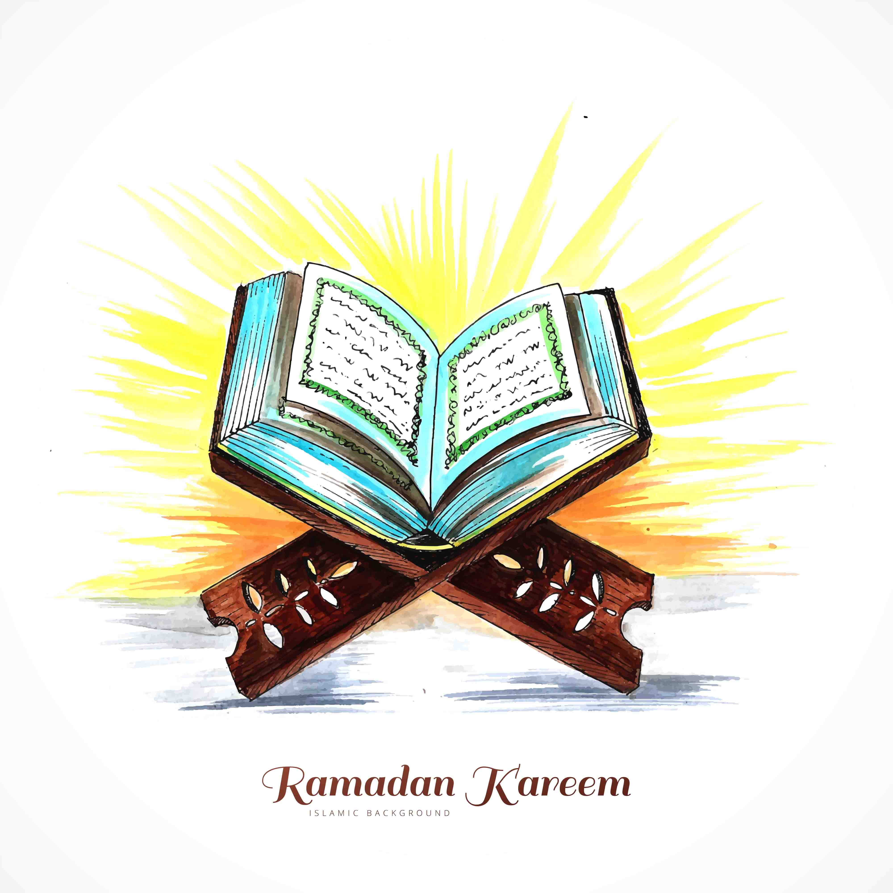

কুরআন শিক্ষা
ধর্মীয় ও নৈতিক শিক্ষা
পরিবর্তনের শক্তি আমাদের স্বেচ্ছাসেবকেরা
স্বেচ্ছাসেবকেরা সংগঠনের প্রতিটি কার্যক্রমে সময়, শ্রম ও দক্ষতা দিয়ে মানুষের পাশে দাঁড়ান।
স্বেচ্ছাসেবক হিসেবে যোগ দিনপ্রতিষ্ঠিত ২০২৪ · মোকামতলা, শিবগঞ্জ, বগুড়া
আল-ইত্তিহাদ সমাজকল্যাণ পরিষদ
Al-Ittihad Samajkallyan Parishad
“একটি ইসলামী সমাজ ব্যবস্থা একটি সভ্যতার সূচনা।”
কুরআন শিক্ষা, মানবিক সহায়তা, স্বেচ্ছায় রক্তদান এবং বৃক্ষরোপণের মাধ্যমে একটি নৈতিক, দায়িত্বশীল ও কল্যাণমুখী সমাজ গড়ে তোলাই আমাদের অঙ্গীকার।
আল-ইত্তিহাদ সমাজকল্যাণ পরিষদ একটি অরাজনৈতিক, অলাভজনক, সামাজিক ও স্বেচ্ছাসেবী সংগঠন।
ধর্মীয় মূল্যবোধ, মানবিকতা, সামাজিক দায়িত্ববোধ এবং পারস্পরিক সহযোগিতার ভিত্তিতে একটি সুন্দর ও কল্যাণমুখী সমাজ গড়ে তোলার লক্ষ্যে সংগঠনটি প্রতিষ্ঠিত হয়েছে।
কুরআন শিক্ষা, অসহায় মানুষের পাশে দাঁড়ানো, জরুরি রক্তদানে সহযোগিতা, বৃক্ষরোপণ এবং বিভিন্ন সামাজিক সচেতনতামূলক কার্যক্রমের মাধ্যমে আমরা সমাজে ইতিবাচক পরিবর্তন আনার চেষ্টা করি।
সম্মিলিত প্রচেষ্টা ও পারস্পরিক সহযোগিতার মাধ্যমে কাজ করা।
অসহায় ও প্রয়োজনগ্রস্ত মানুষের পাশে সহানুভূতির সঙ্গে দাঁড়ানো।
সংগঠনের প্রতিটি কার্যক্রমে জবাবদিহিতা ও দায়িত্বশীলতা নিশ্চিত করা।
ব্যক্তিগত স্বার্থের ঊর্ধ্বে উঠে মানুষের কল্যাণে কাজ করা।
ধর্মীয় শিক্ষা, মানবিক সহযোগিতা, পরিবেশ সচেতনতা এবং স্বেচ্ছাসেবার মাধ্যমে সমাজের সার্বিক কল্যাণে কার্যকর ভূমিকা রাখা আমাদের প্রধান মিশন।
শিশু, কিশোর ও সাধারণ মানুষের জন্য শুদ্ধ কুরআন শিক্ষা এবং নৈতিক মূল্যবোধভিত্তিক শিক্ষামূলক কার্যক্রম পরিচালনা।
দুর্যোগ, দারিদ্র্য, অসুস্থতা বা জরুরি প্রয়োজনের সময়ে অসহায় ও সুবিধাবঞ্চিত মানুষের কাছে প্রয়োজনীয় সহযোগিতা পৌঁছে দেওয়া।
জরুরি রোগীদের জন্য দ্রুত রক্তদাতা সংগ্রহ এবং স্থানীয়ভাবে একটি কার্যকর স্বেচ্ছায় রক্তদাতা নেটওয়ার্ক তৈরি করা।
বৃক্ষরোপণ, পরিচ্ছন্নতা এবং পরিবেশ সচেতনতামূলক কর্মসূচির মাধ্যমে ভবিষ্যৎ প্রজন্মের জন্য একটি বাসযোগ্য পরিবেশ গড়ে তোলা।
আমরা এমন একটি সমাজ দেখতে চাই, যেখানে প্রত্যেক মানুষ ধর্মীয় মূল্যবোধ, মানবিকতা এবং সামাজিক দায়িত্ববোধের আলোকে পরস্পরের কল্যাণে কাজ করবে।
সততা, ন্যায়বোধ এবং দায়িত্বশীলতাকে সামাজিক জীবনের মূল ভিত্তি হিসেবে প্রতিষ্ঠা করা।
সামাজিক অবস্থান নির্বিশেষে মানুষের পাশে দাঁড়ানোর সংস্কৃতি গড়ে তোলা।
শিক্ষা, স্বাস্থ্য ও পরিবেশের উন্নয়নে দীর্ঘমেয়াদি কার্যকর উদ্যোগ গ্রহণ করা।
একটি ইসলামী সমাজ ব্যবস্থা একটি সভ্যতার সূচনা।
ঐক্য, বিশ্বাস, মানবিকতা ও সেবার মাধ্যমে সমাজে ইতিবাচক পরিবর্তন আনার প্রত্যয়ে আমাদের পথচলা।
সংগঠনের পরিচয়, কার্যক্ষেত্র, উদ্দেশ্য ও পরিচালন কাঠামো সম্পর্কে প্রয়োজনীয় তথ্য।
মানবসেবা ও সমাজকল্যাণের লক্ষ্য নিয়ে আল-ইত্তিহাদ সমাজকল্যাণ পরিষদের যাত্রা শুরু।
স্থানীয় তরুণ ও দায়িত্বশীল ব্যক্তিদের নিয়ে সংগঠনের প্রাথমিক স্বেচ্ছাসেবক দল গঠন।
কুরআন শিক্ষা, মানবিক সহায়তা, রক্তদান এবং বৃক্ষরোপণ কার্যক্রম পরিচালনা।
আরও বেশি মানুষকে সম্পৃক্ত করে দীর্ঘমেয়াদি সমাজকল্যাণমূলক উদ্যোগ বাস্তবায়ন।
ধর্মীয় শিক্ষা, মানবিক সহায়তা, স্বাস্থ্যসেবা এবং পরিবেশ রক্ষায় পরিকল্পিত ও স্বেচ্ছাসেবামূলক কার্যক্রম পরিচালনা করা হয়।
চলমান প্রকল্প দেখুনশিশু, কিশোর ও সাধারণ মানুষের জন্য শুদ্ধ কুরআন শিক্ষা এবং নৈতিক মূল্যবোধভিত্তিক শিক্ষার ব্যবস্থা।
দুর্যোগ, শীতকাল ও জরুরি প্রয়োজনের সময়ে অসহায় মানুষের কাছে খাদ্য ও প্রয়োজনীয় সামগ্রী পৌঁছে দেওয়া।
জরুরি রোগীর জন্য দ্রুত রক্তদাতা খুঁজে দেওয়া এবং স্বেচ্ছায় রক্তদানে মানুষকে উৎসাহিত করা।
সবুজ পরিবেশ নির্মাণ ও জনসচেতনতা বৃদ্ধির লক্ষ্যে বৃক্ষরোপণ এবং পরিচ্ছন্নতা কার্যক্রম পরিচালনা।
স্বেচ্ছাসেবক, শুভাকাঙ্ক্ষী এবং দাতাদের সম্মিলিত সহযোগিতায় সমাজকল্যাণমূলক কার্যক্রম এগিয়ে যাচ্ছে।
আমাদের উদ্যোগে সহায়তা করুনবিভিন্ন মানবিক ও সামাজিক কার্যক্রমে সহায়তা পেয়েছেন।
নিয়মিত ও প্রয়োজনভিত্তিক কার্যক্রমে অংশ নিচ্ছেন।
শিক্ষা, মানবিক সহায়তা ও পরিবেশভিত্তিক উদ্যোগ।
পরিবেশ সুরক্ষা ও সবুজায়নের লক্ষ্যে রোপণ করা হয়েছে।
স্থানীয় প্রয়োজন, মানুষের অংশগ্রহণ এবং সংগঠনের সক্ষমতার ভিত্তিতে পর্যায়ক্রমে প্রকল্প বাস্তবায়ন করা হয়।
কুরআন শিক্ষা কার্যক্রম
স্থানীয় শিশু-কিশোরদের জন্য শুদ্ধ কুরআন পাঠ, মৌলিক ধর্মীয় শিক্ষা এবং নৈতিক উন্নয়নমূলক সেশন পরিচালনার উদ্যোগ।
জরুরি সহায়তা তহবিল
জরুরি খাদ্য, চিকিৎসা এবং প্রয়োজনীয় সহায়তার জন্য একটি স্থায়ী মানবিক সহায়তা তহবিল তৈরির উদ্যোগ।
সবুজ মোকামতলা
স্থানীয় শিক্ষা প্রতিষ্ঠান, রাস্তার পাশ এবং উন্মুক্ত স্থানে গাছ লাগানো ও নিয়মিত পরিচর্যার পরিকল্পনা।
পরিকল্পনা, স্বেচ্ছাসেবা এবং শুভাকাঙ্ক্ষীদের সহযোগিতায় সম্পন্ন করা কিছু সমাজকল্যাণমূলক কার্যক্রম।
শীতার্ত ও অসহায় মানুষের মাঝে প্রয়োজনীয় শীতবস্ত্র পৌঁছে দেওয়া হয়েছে।
স্থানীয় পর্যায়ে ফলদ, বনজ ও ঔষধি গাছের চারা রোপণের মাধ্যমে সবুজায়ন কার্যক্রম পরিচালিত হয়েছে।
স্থানীয় তরুণদের স্বেচ্ছায় রক্তদানে উৎসাহিত করা এবং প্রাথমিক রক্তদাতা তালিকা তৈরির কাজ সম্পন্ন।
সামাজিক, মানবিক, শিক্ষামূলক ও পরিবেশভিত্তিক কার্যক্রমে অংশগ্রহণের মাধ্যমে আপনিও আমাদের উদ্যোগের অংশ হতে পারেন।
আয়োজন সম্পর্কে যোগাযোগ করুননতুন কার্যক্রম, দায়িত্ব বণ্টন এবং আগামী কর্মপরিকল্পনা নিয়ে সংগঠনের সদস্য ও স্বেচ্ছাসেবকদের অংশগ্রহণে বিশেষ সভা।
স্বেচ্ছাসেবক, শুভাকাঙ্ক্ষী এবং সমাজকল্যাণমূলক কার্যক্রমে আগ্রহী ব্যক্তিরা যোগাযোগ করে অংশগ্রহণ নিশ্চিত করতে পারবেন।
নতুন শিক্ষার্থী ও অভিভাবকদের নিয়ে কুরআন শিক্ষা কার্যক্রমের উদ্দেশ্য, সময়সূচি এবং নিয়মাবলি সম্পর্কে পরিচিতিমূলক সভা।
অংশগ্রহণের তথ্যতরুণদের রক্তদানে উৎসাহিত করা, প্রাথমিক রক্তদাতা তালিকা হালনাগাদ এবং জরুরি যোগাযোগ নেটওয়ার্ক শক্তিশালী করার আয়োজন।
যোগাযোগ করুনস্থানীয় শিক্ষা প্রতিষ্ঠান ও রাস্তার পাশে বৃক্ষরোপণ এবং নির্বাচিত স্থানে পরিচ্ছন্নতা কার্যক্রম পরিচালনা করা হবে।
স্বেচ্ছাসেবক হোনআয়োজনের তারিখ, সময় বা স্থান প্রয়োজন অনুযায়ী পরিবর্তিত হতে পারে। সর্বশেষ তথ্যের জন্য আমাদের Facebook page অথবা যোগাযোগ নম্বর অনুসরণ করুন।
সংগঠনের সর্বশেষ কার্যক্রম, ঘোষণা, সমাজকল্যাণমূলক উদ্যোগ এবং ভবিষ্যৎ পরিকল্পনার গুরুত্বপূর্ণ তথ্য এখানে প্রকাশ করা হয়।
Facebook-এ সব আপডেট দেখুনশিক্ষা, মানবিক সহায়তা, রক্তদান এবং পরিবেশভিত্তিক উদ্যোগকে আরও সুসংগঠিত ও বিস্তৃত করার লক্ষ্যে নতুন কর্মপরিকল্পনা গ্রহণ করা হয়েছে।
স্থানীয় শিশু-কিশোরদের জন্য শিক্ষার্থী তালিকা, সময়সূচি ও প্রয়োজনীয় শিক্ষা উপকরণ প্রস্তুতের কাজ চলছে।
প্রকল্প দেখুনজরুরি রোগীদের দ্রুত সহযোগিতার জন্য আগ্রহী রক্তদাতাদের তথ্য সংগ্রহ ও যাচাইয়ের উদ্যোগ নেওয়া হয়েছে।
যোগাযোগ করুনস্থানীয় শিক্ষা প্রতিষ্ঠান, রাস্তার পাশ এবং উন্মুক্ত জায়গায় বৃক্ষরোপণের উপযুক্ত স্থান চিহ্নিত করা হচ্ছে।
অংশগ্রহণ করুনসামাজিক ও মানবিক কার্যক্রমে নিয়মিত অংশ নিতে আগ্রহীদের নিবন্ধনের আহ্বান জানানো হয়েছে।
নিবন্ধন করুনঅসহায় পরিবার ও জরুরি পরিস্থিতিতে দ্রুত সহযোগিতা প্রদানের জন্য তহবিল গঠনের কাজ চলছে।
সহায়তা করুনসংগঠনের নীতি, পরিকল্পনা ও কার্যক্রম বাস্তবায়নে দায়িত্বপ্রাপ্ত সদস্যবৃন্দ।
সভাপতি
সহ-সভাপতি
সাধারণ সম্পাদক
অর্থ সম্পাদক
স্বেচ্ছাসেবকেরা সংগঠনের প্রতিটি কার্যক্রমে সময়, শ্রম ও দক্ষতা দিয়ে মানুষের পাশে দাঁড়ান।
স্বেচ্ছাসেবক হিসেবে যোগ দিনসমাজকল্যাণমূলক কার্যক্রমে সরাসরি অংশগ্রহণ।
দলগত কাজ, নেতৃত্ব ও যোগাযোগের দক্ষতা অর্জন।
মানুষের পাশে দাঁড়ানোর বাস্তব অভিজ্ঞতা।
আমাদের স্বেচ্ছাসেবকরা সময়, শ্রম, দক্ষতা এবং মানবিক দায়িত্ববোধ দিয়ে সংগঠনের প্রতিটি উদ্যোগকে এগিয়ে নিয়ে যান।
“মানুষের প্রয়োজনের সময়ে পাশে দাঁড়ানোর অভিজ্ঞতা আমাকে আরও দায়িত্বশীল এবং মানবিক হতে শিখিয়েছে।”
“নিজ হাতে গাছ লাগানো এবং অন্যদের পরিবেশ সম্পর্কে সচেতন করা একটি অসাধারণ অভিজ্ঞতা।”
“আমার সামান্য সহযোগিতা একজন মানুষের জীবন রক্ষায় কাজে লাগতে পারে—এটাই সবচেয়ে বড় প্রাপ্তি।”
মানবিক সহায়তা, শিক্ষা, রক্তদান, বৃক্ষরোপণ এবং সামাজিক সচেতনতামূলক কার্যক্রমের নির্বাচিত কিছু মুহূর্ত এখানে তুলে ধরা হয়েছে।
Facebook-এ আরও ছবি দেখুনবর্তমানে ৮ টি ছবি দেখানো হচ্ছে

সম্মান ও গোপনীয়তা বজায় রেখে প্রয়োজনীয় সহযোগিতা পৌঁছে দেওয়ার একটি মুহূর্ত।







সংগঠনের কার্যক্রম, সচেতনতামূলক আয়োজন, স্বেচ্ছাসেবকদের অভিজ্ঞতা এবং গুরুত্বপূর্ণ মুহূর্তগুলো ভিডিওর মাধ্যমে দেখুন।
YouTube Channel দেখুনশিক্ষা, মানবিক সহায়তা, রক্তদান এবং পরিবেশভিত্তিক উদ্যোগে আমাদের স্বেচ্ছাসেবকদের অংশগ্রহণ ও কার্যক্রমের নির্বাচিত কিছু মুহূর্ত।
YouTube-এ ভিডিওটি দেখুনকার্যক্রমের উদ্দেশ্য, পরিকল্পনা এবং ভবিষ্যৎ উদ্যোগের সংক্ষিপ্ত বিবরণ।
পরিবেশ রক্ষায় বৃক্ষরোপণ ও পরিচ্ছন্নতার গুরুত্ব নিয়ে আমাদের উদ্যোগ।
জরুরি রোগীদের সহায়তায় নিয়মিত রক্তদাতার প্রয়োজনীয়তা ও সামাজিক দায়িত্ব।
সংগঠনের সামাজিক ও মানবিক কার্যক্রমে অনুদান প্রদান করে অসহায় মানুষের পাশে দাঁড়ান।
ব্যাংক বা মোবাইল ফাইন্যান্সিয়াল সার্ভিসের তথ্য পরবর্তী ধাপে যুক্ত করা হবে।
যোগাযোগ করুনআপনার সময়, দক্ষতা ও আগ্রহ দিয়ে সামাজিক কার্যক্রমে অংশগ্রহণ করতে নিবন্ধন করুন।
সংগঠনের কার্যক্রম, অনুদান, স্বেচ্ছাসেবক নিবন্ধন অথবা অন্যান্য তথ্যের জন্য যোগাযোগ করুন।
পরবর্তী ধাপে Google Map এখানে যুক্ত করা হবে।
{kind=link}
{kind=link}
{kind=link}
{kind=link}
{kind=link}
{kind=link}